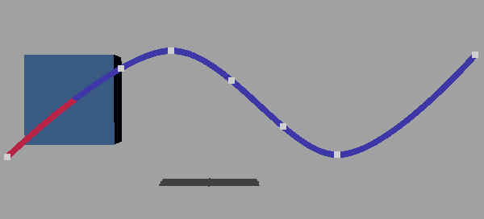
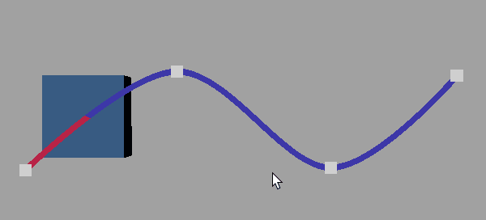
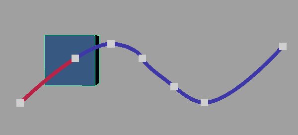

在运动轨迹上修改关键帧
- 在运动轨迹上单击鼠标右键，然后从标记菜单中选择“添加/移除关键帧”(Add/Remove Keys)。

在轨迹上单击鼠标右键以查看标记菜单
这会将运动轨迹设置为“添加/移除关键帧”(Add/Remove Keys)模式，使您可以直接在运动轨迹上调整关键帧：
目标 操作 插入关键帧
在运动轨迹上单击鼠标右键，然后从标记菜单中选择“添加/移除关键帧”(Add/Remove Keys)。在运动轨迹上单击要插入关键帧的位置。
移动关键帧
选择一个关键帧，按 w 键以激活移动工具，并沿运动轨迹滑动选定关键帧。
删除关键帧
在运动轨迹上单击鼠标右键，然后从标记菜单中选择“添加/移除关键帧”(Add/Remove Keys)。按住 Shift 键并单击运动轨迹上的某个关键帧以将其删除。
单击可添加关键帧，按住 Shift 键并单击可从轨迹中移除关键帧
注：如果使用“曲线图编辑器”(Graph Editor)编辑选定的运动轨迹关键帧，则在使用“区域工具”(Region Tool)或“晶格变形关键帧工具”(Lattice Deform Keys Tool)修改运动轨迹曲线分段时，请注意不要删除选定关键帧。在这种情况下，“曲线图编辑器”(Graph Editor)会刷新以显示一个空的图表视图，因为选定关键帧不再存在。
如果基于固定时间范围创建轨迹（例如，“开始时间”(Start time)为 1，“结束时间”(End time)为 10），则可能会对运动轨迹进行此类修改。如果拖动一个包含第 8 帧关键帧的区域，直到其不在 1 到 10 范围内，系统将删除第 8 帧上的运动轨迹关键帧。
显示和编辑切线
- 在运动轨迹上选择一个可编辑关键帧，然后执行下列任一操作：
注： 切线在“运动轨迹编辑器”(Motion Trail Editor)中不可用，仅在“属性编辑器”(Attribute Editor)或运动轨迹标记菜单的 MotionTrailHandleShape 中可用。
- 在“属性编辑器”(Attribute Editor)中，启用“显示入切线”(Show In Tangent)或“显示出切线”(Show Out Tangent)（在“motionTrailHandleShape”选项卡的“MotionTrailShape 属性”(MotionTrailShape Attributes)下）。
- 单击鼠标右键，然后从运动轨迹标记菜单中选择“显示切线”(Show Tangents)。
入切线和出切线现在会显示在您选择的任何关键帧上。
- 选择切线控制柄（切线的尖端），然后使用移动工具 (w) 调整切线并修改轨迹的形状。
运动轨迹显示以下类型的可编辑切线：样条、线性、钳制、平坦、固定、高原和自动。
显示和编辑计时调整钮
可以在运动轨迹上显示和调整计时调整钮，以便控制动画在每个关键帧上的缓入和缓出。计时调整钮表示时间中的帧。可以调整关键帧两侧的计时调整钮间距，从而改变对象接近和远离关键帧时的移动速度：拉伸计时调整钮会减慢对象进入或离开关键帧的移动速度，而压缩调整钮会加快移动速度。
显示和编辑计时调整钮
- 在运动轨迹上选择一个关键帧，然后执行下列任一操作：
- 在关键帧上单击鼠标右键，然后从显示的标记菜单中选择“入时序珠”(Timing Beads In)或“出时序珠”(Timing Beads Out)。
- 在“属性编辑器”(Attribute Editor)中，启用“显示入调整钮”(Show In Bead)或“显示出调整钮”(Show Out Bead)（在“motionTrailHandleShape”选项卡的“MotionTrailShape 属性”(MotionTrailShape Attributes)下）。
- 将计时调整钮拖向或拖离轨迹上的关键帧，以控制对象接近或远离选定关键帧的移动速度。拉伸调整钮使彼此远离，可以放慢移动，或压缩调整钮使彼此靠近，可以加快移动。